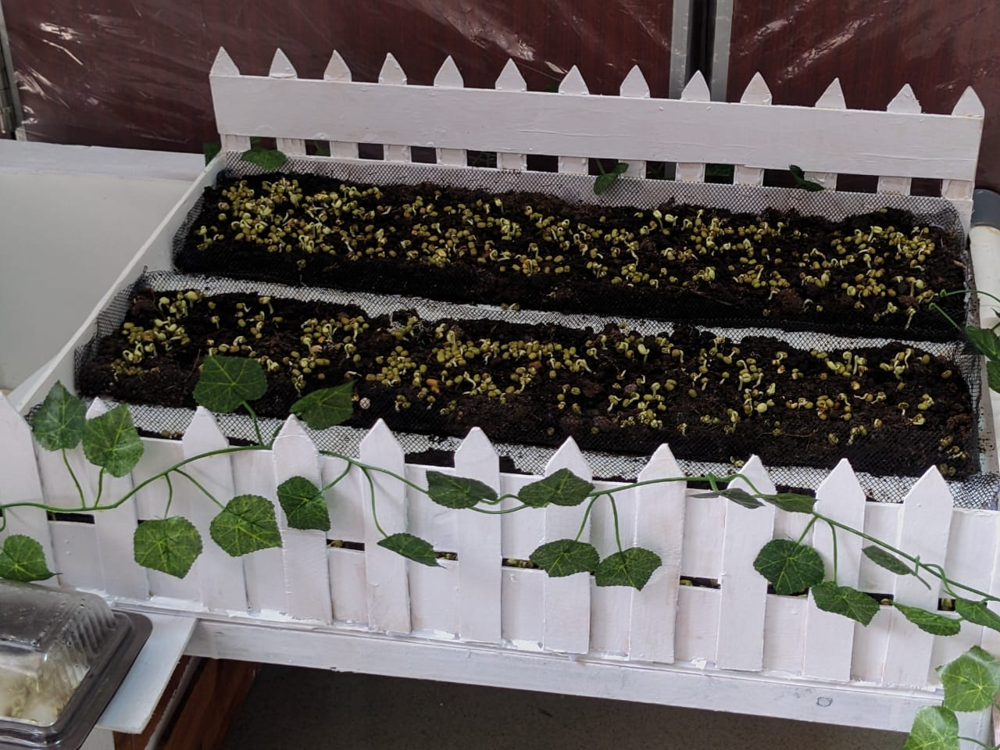
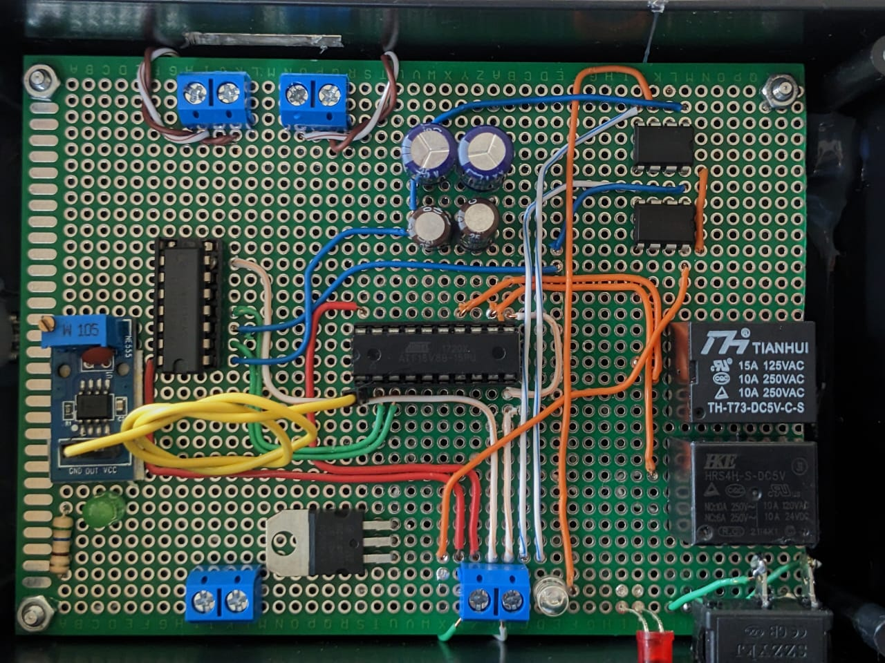
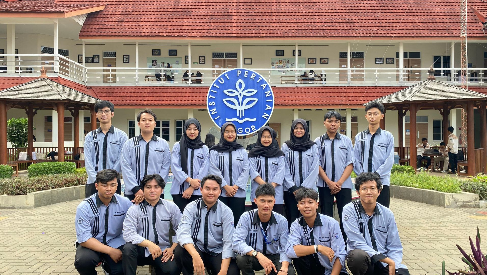

SIrO
SiRo adalah sistem irigasi otomatis yang menggunakan IC GAL 16V8A dan sensor kelembaban tanah untuk menjaga kelembaban tanah secara optimal tanpa intervensi manual. Proyek ini menggunakan sensor kelembaban yang terus-menerus mendeteksi kondisi tanah. Ketika tanah mulai mengering, sensor memberikan sinyal berupa tegangan rendah yang diteruskan ke IC GAL 16V8A sebagai input.

